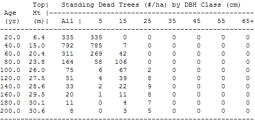

The Snag Table is accessed through the Tables Menu or the Tool Bar icon above. This table reports the number of snags, by 10 cm DBH classes, at each age step (i.e., a snapshot), rather than average density over the period. Snag predictions are produced by the TASS Snag Model. For multiple species, the output reports the sum of all species, but the model is applied on a species basis.
The Snag Specifications dialogue box appears when a Snag Table is first requested. Subsequently, it can be accessed with the Pencil icon on the Toolbar. This dialogue box shows the underlying model, an example of the values calculated, and options for changing the model coefficients.
This example shows a Snag Table for a lodgepole pine stand of natural origin with an initial density of 10 000 stems per ha, regen delay of 2 yrs, a site index of 20 m, and no precommercial thinning. This example was created with a previous version of TIPSY.

At age 60.0 years, there are 311 standing dead trees per hectare.
These 311 trees are the trees that are still standing from the 7883 trees (1602+4565+1716) that died between stand ages 0 and 60, shown in the Mortality Table.
269 trees have a DBH between 0.1 and 10.0 cm, and 42 dead trees have a DBH between 10.1 and 20.0 cm.
To compute average periodic snag density, select 1 year age steps in Table Specifications, then export the data to another software package (e.g., EXCEL).